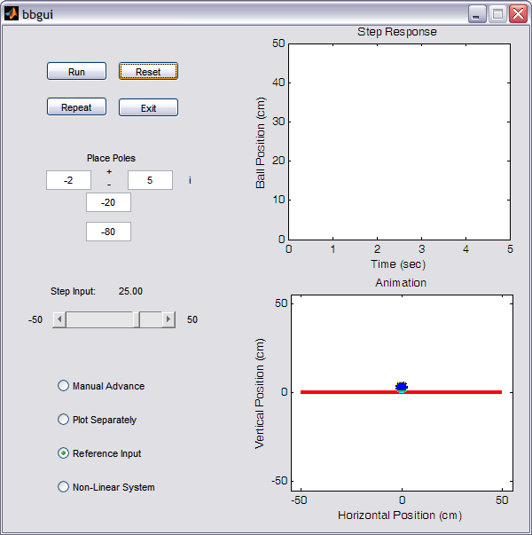
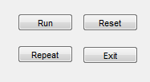
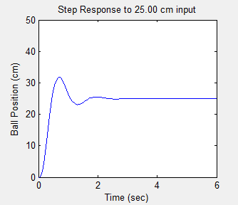
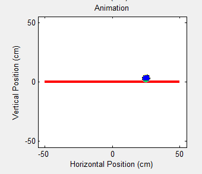
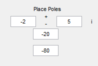
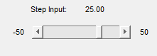
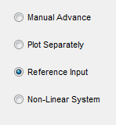

Animation for the Ball and Beam Example
Contents
Purpose
The purpose of this Graphical User Interface (GUI) is to allow the user to view an animation of the ball and beam system with the step disturbance response plot. This allows the user to see the correlation between the plot and the system's physical response.
The animation and GUI are based on the Ball & Beam: State-Space Controller Design example. This method was used because we can easily return the ball position and beam angle as well as their respective velocities. For more information on the system model please refer to the Ball & Beam: System Modeling page.
Running the GUI
To run the GUI you will need 3 files. Copy each of them to the directory in which you are running MATLAB.
bbgui.fig - contains the graphical interface.
bbgui.m - contains the GUI callback function.
bbfunode.m - contains the ode file necessary to run the non-linear simulation.
Once these files are copied into your MATLAB directory, simply enter the following command:
bbgui
Neither of the other two files need to be run from the command window, they will be called separately by the GUI. The following figure should appear on your screen after the command has been executed:

Using the GUI
Below are descriptions of each of the controls found in the GUI. These descriptions are intended to give the user a better understanding of what each control actually does. However, feel free to experiment with the controls and use this section as a reference for any questions you might have.
The first group of controls contains the Run, Repeat, Reset and Exit buttons. These controls perform most of the work in the GUI.

Run - This button performs the simulation, plots the response in the upper-right portion of the window and runs the animation in the lower-right portion of the window.
Repeat - The purpose of this button is to re-plot the response and re-run the animation. It uses the results from the previous simulation performed by choosing the RUN button. This is especially useful for the nonlinear simulation, which can take some time to run.
Reset - This button clears the upper-right step response plot and sets the ball position and beam angle to zero in the lower-right plot. If a plot is not cleared, the next run will be graphed on the same plot. This is useful if you want to graphically see the effect of varying a parameter.
Exit - This button closes the GUI.
An example of the animation and response plot are shown below.


The next group of controls allows the user to place the system's four poles wherever desired. This is the input to the design of the full-state feedback controller.

Complex Poles - The two side-by-side editable text fields allow you to position poles in the imaginary plane. The first field represents the real part and should stay negative (a positive real pole will lead to an unstable closed-loop system). The second field contains the imaginary part. The +/- between them indicates that these are two poles in a complex conjugate pair. Making the real part more negative will decrease response time, while increasing the imaginary part will increase the overshoot.
Real Poles - The bottom two editable text fields contain the real poles which can be placed anywhere on the real axis. These poles are usually placed far to the left so that the complex poles will dominate the response.
Feel free to move the poles around to see what happens!
The control shown below allows you to change the step input command.

Step Slider - The slider allows you to change the magnitude of the step input command. You can click on the arrows to move the slider, grab the the slider bar and move it, or click on the slider to change the step input. The current value of the step input is displayed in the upper portion of the box.
This next group of controls contains checkboxes that allow the user to change various features of the GUI.

Manual Advance - If this control is checked, the user is able to advance the animation and plot one frame at a time. The frames are advanced by pressing any key on the keyboard. This function is useful if the animation moves too fast for the user and will allow the user to better visualize the entirety of the system's motion.
Plot Separately - By checking this box the step response plot is graphed in its entirety before the animation is run.
Reference Input - This box is automatically checked when the GUI is run. By un-checking it the user removes the reference input term, Nbar, from the simulation. The reference input is used to correct steady-state errors common to full-state feedback systems.
Non-Linear System - This checkbox allows the user to switch the model from the linear representation used throughout the tutorials to the full nonlinear representation of the system. Through the nonlinear system the user may get a better idea of what actually happens in the system. For instance, the linear representation will allow the ball to move faster than is physically possible when seen in the nonlinear system.
Remember, this GUI is intended to be an interactive learning tool that will allow the user to get a feeling for how some basic control techniques and ideas are represented in the real world. Therefore, the user is encouraged to play around with this tool to enhance their understanding of controls.